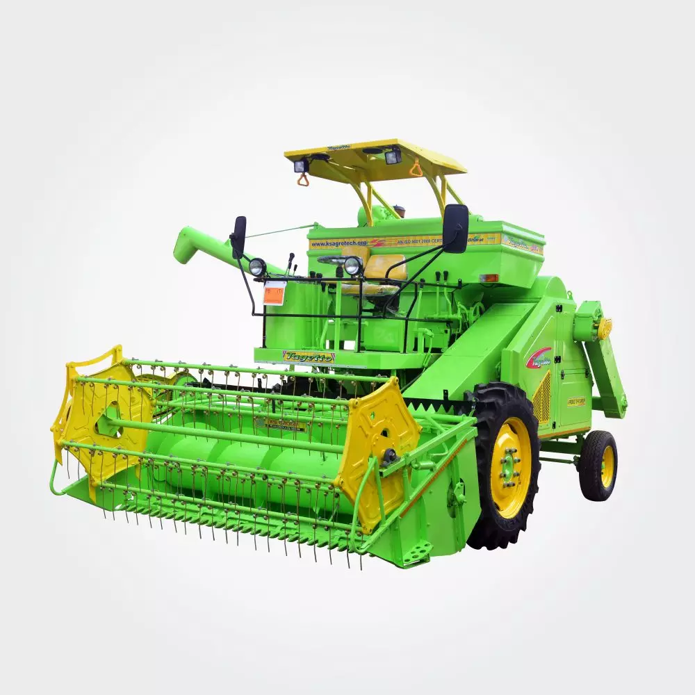

Florist Shears
Purpose: Used for pruning flowers and delicate stems in floriculture.
- Soil Type: Not applicable (used for pruning plants)
- Material: Stainless steel blades with ergonomic handles
- Price Range: $10 - $50
Working: Florist shears are designed for precision cutting, ideal for trimming flowers, small branches, and plants in floral arrangements or gardens.
Benefits: Provides clean cuts without damaging delicate stems, ensuring healthy plant growth and aesthetics in flower arrangements.
Seed Drills
Purpose: Used for planting seeds at the correct depth and spacing.
- Soil Type: Loamy and clay soil
- Tractor HP Needed: 40-70 HP
- Fuel Efficiency: 10-14 km/l
- Price Range: $2,000 - $10,000
Working: Seed drills create furrows, place seeds in the soil, and cover them in one go, ensuring uniform seed distribution and proper depth, which leads to better germination.
Benefits: Ensures uniform seed distribution and reduces wastage, leading to better crop yield.
Harvesters
Purpose: Used for harvesting crops like wheat, rice, and corn.
- Soil Type: Well-drained soil
- Tractor HP Needed: 80-150 HP
- Fuel Efficiency: 5-8 km/l
- Price Range: $20,000 - $60,000
Working: Harvesters cut the crop, separate the grain from the chaff, and clean the grain. They reduce the time and labor needed for manual harvesting.
Benefits: Saves labor, time, and reduces crop wastage during the harvest season.
Potato Planter
Purpose: Used for planting potato seeds with precise spacing and depth.
-
Planting capacity: 4000 m2/h (at speeds of 3 to 5 kmph)
- Soil Type: Loamy and sandy soil
- Tractor HP Needed: 50-70 HP
- Fuel Efficiency: 10-12 km/l
- Price Range: $3,000 - $15,000
Working: Potato planters automate the planting process, ensuring uniform placement of potato seeds in rows at a consistent depth. The machine also covers the seeds with soil after planting.
Benefits: Saves time, ensures uniform planting, increases crop yield by providing consistent seed depth and spacing.
Irrigation Systems
Purpose: Provides water to crops efficiently.
- Soil Type: Suitable for all soil types
- Fuel Efficiency: Varies by type (e.g., electric-powered)
- Price Range: $500 - $10,000
Working: Irrigation systems like drip or sprinkler irrigation provide water directly to the roots of the plants, minimizing wastage and maximizing absorption.
Benefits: Reduces water wastage, improves crop yields, and allows precise water control.
Disc Plough
Purpose: Used to turn over the upper layer of soil to prepare it for planting.
- Soil Type: Clay and loamy soil
- Tractor HP Needed: 40-80 HP
- Fuel Efficiency: 9-12 km/l
- Price Range: $500 - $5,000
Working: Ploughs turn over the soil to bury weeds and crop residue, while also breaking up compacted soil, improving aeration and water retention.
Benefits: Improves soil health by increasing aeration and nutrient distribution.
Backpack Weeder Machine
Purpose: Used for weeding crops in fields with precise control.
- Soil Type: Suitable for all soil types
- Fuel Type: Gasoline or Battery-operated
- Working Time: 6-8 hours on a full charge/fuel tank
- Price Range: $100 - $600
Working: The Backpack Weeder Machine allows the operator to carry a lightweight weeding device on their back while targeting weeds with precision. It can operate for extended hours and is used in fields to remove weeds without damaging crops.
Benefits: Reduces labor and time spent weeding, ensures precise weed control, and is easy to operate in tight spaces.
Spray Pump

Purpose: Used for spraying pesticides, herbicides, and fertilizers.
- Soil Type: Suitable for all soil types
- Fuel Type: Manual, Electric, or Petrol
- Price Range: $50 - $500
Working: Spray pumps can be operated manually or with an electric motor and are used for applying liquids uniformly over crops. They can be handheld or mounted on tractors depending on the size of the farm.
Benefits: Ensures even distribution of chemicals or nutrients, improving crop health and yield.
Battery Operated Fertilizer Broadcaster
Purpose: Used for evenly broadcasting fertilizers over a field.
- Soil Type: All soil types
- Tractor HP Needed: Not required (battery-operated)
- Battery Life: 4-6 hours of continuous operation
- Price Range: $200 - $1,000
Working: This equipment uses a motor powered by a battery to spread granular or powdered fertilizers uniformly over a field. It reduces labor and ensures optimal coverage.
Benefits: Saves time and energy, increases precision in fertilizer application, and improves crop growth.